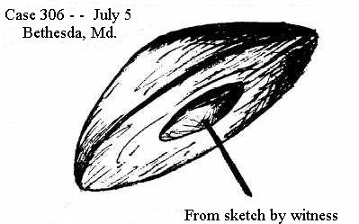

Appendages : antennes, pieds, propulseurs ou queues
Case 1 - June, near Aloha, Oregon
While driving between Portland and Aloha at sundown, sometime in June, Mrs. August Krause saw an object making
loops in the air. She described it as saucer-shaped, with the top more rounded than the bottom. She said the object
would execute a loop with a slight hover at the top of each loop.
Attached to this object was a flexible appendage that bore a resemblance to the tail of a kite, in length longer
than the width of the object, and with small cross pieces at regular intervals
along its length. At the top
of each loop, as the object remained momentarily suspended, the tail did not droop
, but remained fixed in
position behind the object; then, as the disc continued its maneuver, the tail would follow in a flexible arc.
Mrs. Krause had stopped the car and rolled down the window to be sure she wasn't looking at some kind of
reflection. She watched this strange performance for almost five minutes, during which time the object came closer
and closer. Then it suddenly moved off in a straight line at high speed and was lost to view. Mrs. Krause had no
idea as to the size or distance of the object, but there were clouds in the sky, and the object was below these
clouds. She had it in view long enough to be certain of the peculiar behavior of the flexible tail.
Case 242 - July 4, near Pattonville, Missouri
About 5:00 p.m. CDT, while on a picnic on Old St. Charles Road, four miles west of Pattonville, Nova Hart, a St.
Louis mechanic living at 2969A St. Ferdinand Avenue, his wife Marveline, and her parents, Mr. and Mrs. J. H.
Jackson, of 3906 Kennerly Avenue, St. Louis, saw what appeared to be an inverted, saucer-shaped object, ribbed
like a parachute canopy
, gliding slowly in a westerly direction no more than 300 feet above the ground.
Hart, a former infantryman trained as an aircraft spotter, said I've never seen anything like it. It looked more
like a parachute than anything, though it appeared to have a propeller in the middle
. The propeller, attached to
the center of the underside, appeared to Hart to act more as a stabilizer than a source of power
. The object
made no noise as it floated over the observers. It was silver-grey in color; one news account describes it as
appearing transparent
.
As it moved in the direction of St. Charles, the observers said it kept turning in a slow roll
. The object
was circular, between 20 and 25 feet in diameter, and had what looked to Mrs. Hart like a ragged tail
on it
(the propeller). They watched it for three or four minutes before it disappeared from view.
Dr. McDonald was able to locate Mr. And Mrs. Hart and interview them by phone. Neither could recall who first saw
the object but Hart said they became aware of it when a shadow was cast on their party. They saw the curious object
drifting slowly toward them at a speed of about 50 or 60 miles an hour, no more than several hundred feet off the
ground. It was moving from south to north (not east to west, as reported in the press accounts). The upper surface
was hemispherical, with ribbing, like a parachute canopy. Mrs. Hart compared it to the top of an umbrella. The
object was silver-grey (not transparent
, as one press account had it), rather like some dull metallic surface
covering --like the dull side of aluminum foil
, as Mrs. Hart put it.
Hart explained the newspaper references to the slow roll
the object performed: as it approached the viewers
from the south, its near edge was tipped upward, exposing the underside. When it passed over them, it leveled off,
and in moving northward, curiously, it tipped in the opposite direction -- that is, the edge nearest them was again
tipped upward. This puzzled Hart. Aside from the slow tipping action, there was no irregular motion -- no spinning
or undulating.
The underside appeared to consist of a red conical substructure, point down, and near the bottom of the cone (which
Hart compared to red plastic
) was something like a propeller -- an appendage likened by Hart to a rope
ladder
. Mrs. Hart said it had the appearance to her of a tattered edge
. It was about five or six feet
in diameter, and was moving too slowly and was too small to be a source of motive power, in their opinion. The
propeller puzzled them a great deal. It made no noise, they said.
The Harts mentioned a number of other people in the picnic area who were all watching the object. Several people
came up and asked them what they thought it was. One man, in a truck, tried to follow it; he was last seen hanging
out the door as his truck went down the road in pursuit of the object. Hart called the paper primarily to try to
identify the object. He received a great deal of kidding about it and could understand why others were not reporting
them. He was never interrogated by the Air Force.
Case 249 - July 4, Philadelphia, Pennsylvania
Just about sundown, Dr. M. K. Leisy, junior intern at the Pennsylvania Hospital for Mental Diseases in the western
section of Philadelphia (at Market and 44th Streets), was reading on the west porch of the hospital when his
attention was drawn to the sky by a loud roar. He saw a big transport plane going over, which may have accounted for
the noise, but he also saw something far more surprising: coming out of the north northwest sky was a dark,
spherical object with a luminous halo around it. The object was flying below the clouds at a moderate speed, about
the same speed as the wind
, and appeared to be propelled by a set of whirling wings, or jets
. After
several moments, the object disappeared into the clouds overhead.
A check with various agencies disclosed that no balloons had been released over that area at the time, nor was it
possible to confuse the object with anything connected with the fireworks display scheduled to begin after dark.
Independent reports of the same, or other objects, were made elsewhere in the western part of town at about the same
time.
Case 287 - July 4, Los Angeles, California
Herman V. Friede, an aircraft inspector living at 226 West 11th Street, described seeing an object shaped like a
lima bean
fly over Elysian park at 8:30 p.m. PST, at an estimated altitude of 5,000 feet. Friede said he could
see what appeared to be two jet pipes sticking out from the rear edge of the object, with vapor trails coming from
them. The leading edge of the object appeared transparent, Friede reported, and could have been a cockpit
.
Friede's work as an aircraft inspector should certainly insure his being able to tell a conventional craft from a
non-conventional one.
Case 306 - July 5, Bethesda, Maryland

Jack LaBous, a Washington artist living in the 3500 block of East Capital Street, was riding on a Benning bus near
Bethesda sometime during the morning when he saw a flat, disc-shaped object with a small dome-like shape on the
underside, spinning high in the air at an altitude he estimated to be above 15,000 feet. He also noticed a
stick-like appendage, like a radio antenna, protruding downward from the center under the object (see drawing).
Mr. LaBous worked for eight years as a visual artist for the Civil Aeronautics Administration; when he saw the
object, he quickly made a sketch of it on the back of an envelope he had in his pocket. The detail of the antenna-like
appendage is remarkably similar to the device described by Gregory Zimmer in Sioux Falls the following day (Case
452).
Case 330 - July 5, Tacoma, Washington
In many sightings witnesses reported that a group of objects appeared to be connected
by unseen wires or
string, or by some other invisible means, because they moved in unison, or in a manner that suggested some kind of
connection between them. In the following report, an actual physical appendage was reported seen joining two objects
together.
Mrs. Lillian Emblem, of 1115 6th Avenue, reported seeing two objects at fairly close range. She said that the
objects really looked like two spools, joined together by a connecting rod
. For about 30 seconds she and a
friend, Mrs. Marie Reed, watched the objects move silently through the air at about the speed of a plane.
Case 322 - July 5, Covington, Kentucky
Mrs. Dorothy Kreve and Mrs. May Lawrence, both of 434 Johnson Street, Covington, reported that they had seen a
circular object with legs
flying overhead during the afternoon. This altogether too brief account becomes
more interesting when compared with the following report, almost equally as brief.
Case 401 - July 6, Chicago, Illinois
This report is reprinted in its entirety, as it appeared in numerous papers on July 7. The original account could
not be found in the Chicago papers.
Chicago, July 6 (UP)-- An excited woman telephoned a Chicago newspaper Sunday to report that she had seen a flying
saucer
and that it had legs
.
I was standing on the porch
, she said, and I thought for sure it was coming down and slap me in the
face.
Case 452 - July 6, Sioux Falls, South Dakota
Gregory Zimmer, County Treasurer's assistant, reported that at 5:15 p.m. CST he saw a round object resembling a
balloon
fly over his house at 1328 West Sioux Street, as he lay in his back yard. The object flew over at high
speed, traveling faster than the fastest planes
, according to Zimmer. It was described as generally silver
colored, like a Christmas decoration
, while a part of the top appeared darker in color. The object was flying
at an estimated height of nearly 10,000 feet in a southwesterly direction.
Zimmer said that the object had a little tail sticking straight down
, similar to the appendage described by
Jack LaBous (Case 306), on the previous day. This thread-like tail
, instead of trailing behind the object,
appeared more like a rigid projection underneath it.
Marine Ace Joe Foss, head of the Sioux Falls National Guard unit, sent a pilot aloft to look for the object, but
the pilot reportedly saw nothing unusual. Kenneth Clark, a local meteorologist, said there had been a garden party
for children at the Veterans Hospital during the afternoon, at which time helium-filled balloons had been used as
decorations.
He proposed that one of the balloons got loose and was the culprit responsible for the reported sighting. The
hospital is southwest of Zimmer's home, according to the newspaper accounts. Apparently meteorologist Clark never
considered the fact that for a balloon to be seen carried southwest by the prevailing winds, it would have to be
released at a point somewhere other than southwest of the reporting witness.
Case 516 - July 6, near Burlington, Wisconsin
Mr. and Mrs. Gordon Nielson, of Waukesha, were returning home on Sunday night from Lake Geneva, and as they drove
between Lake Geneva and Burlington, they saw a saucer-shaped object with a propeller on front, larger than the
saucer itself
. Following this object, as if in pursuit, was a small cub plane. Describing the object as slightly
larger than a regular-sized saucer
(probably a relative comparison, as a "regular-sized saucer" would scarcely
be visible at the height of a plane), Mrs. Nielson said a light flashed at least twice from it
. The plane
pursuing the object was easily outdistanced by it, according to the witnesses.
Case 526 - July 6, Minneapolis, Minnesota
Toward midnight, Mrs. Clarence Lasseson, of 606 West 31st Street, saw a mysterious object at close range
outside her home. The disc-shaped object, which appeared to be about the size of a ten-inch plate
, had a
propeller on its rear edge, and flew over her house at tree-top level, she reported. (The headline of this brief
report says, Click, Phht
-- whether this is a reference to some reported but unpublished sound heard by the
witness, or just a headline writer's "sense of humor," is not known.)